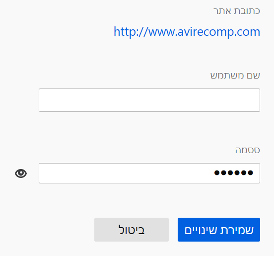
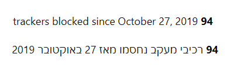

RTL languages such as Arabic, Hebrew, Persian and Urdu are read and written from right-to-left, and the user interface for these languages should be mirrored to ensure the content is easy to understand.
When a UI is changed from LTR to RTL (or vice-versa), it’s often called mirroring. An RTL layout is the mirror image of an LTR layout, and it affects layout, text, and graphics.
In RTL, anything that relates to time should be depicted as moving from right to left. For example, forward points to the left, and backwards points to the right.
When a UI is mirrored, these changes occur:
In CSS, while it's possible to apply a rule for LTR and a separate one specifically for RTL, it's usually better to use CSS Logical Properties which provide the ability to control layout through logical, rather than physical mappings.
| Do | Don't do |
|---|---|
{{cssxref("margin-inline-start")}}: 5px; |
margin-left: 5px; |
{{cssxref("padding-inline-end")}}: 5px; |
padding-right: 5px; |
{{cssxref("float")}}: inline-start; |
float: left; |
{{cssxref("inset-inline-start")}}: 5px; |
left: 5px; |
{{cssxref("border-inline-end")}}: 1px; |
border-right: 1px; |
border-{start/end}-{start/end}-radius: 2px; |
border-{top/bottom}-{left/right}-radius: 2px; |
{{cssxref("padding")}}: 1px 2px; |
padding: 1px 2px 1px 2px; |
{{cssxref("margin-block")}}: 1px 3px; && {{cssxref("margin-inline")}}: 4px 2px; |
margin: 1px 2px 3px 4px; |
{{cssxref("text-align")}}: start; or text-align: match-parent; (depends on the context) |
text-align: left; |
When there is no special RTL-aware property available, or when left/right properties must be used specifically for RTL, use the pseudo {{cssxref(":-moz-locale-dir(rtl)")}} (for XUL files) or :dir(rtl) (for HTML files).
For example, this rule covers LTR to display searchicon.svg 7 pixels from the left:
.search-box {
background-image: url(chrome://path/to/searchicon.svg);
background-position: 7px center;
}
but an additional rule is necessary to cover RTL and place the search icon on the right:
.search-box:dir(rtl) {
background-position-x: right 7px;
}
Note that it may be inappropriate to use logical properties when embedding LTR within RTL contexts, this is described further in the document.
RTL content also affects the direction in which some icons and images are displayed, particularly those depicting a sequence of events.
1920x1080 should not become 1080x1920)10 px should not become px 10 (unless the size unit is localizable))The most common way is by flipping the X axis:
{{cssxref("transform")}}: scaleX(-1);
By default, in RTL locales, some symbols like "/", "." will be moved around and won't be displayed in the order that they were typed in. This may be problematic for URLs for instance, where you don't want dots to change position.
Here's a non-exhaustive list of elements that should be displayed like they would be in LTR locales:
To make sure these are displayed correctly, you can use one of the following on the relevant element:
direction: ltrdir="ltr" in HTMLSince the direction of such elements is forced to LTR, the text will also be aligned to the left, which is undesirable from an UI perspective, given that is inconsistent with the rest of the RTL UI which has text usually aligned to the right. You can fix this using text-align: match-parent. In the following screenshot, both text fields (username and password) and the URL have their direction set to LTR (to display text correctly), but the text itself is aligned to the right for consistency with the rest of the UI:

However, since the direction in LTR, this also means that the start/end properties will correspond to left/right respectively, which is probably not what you expect. This means you have to use extra rules instead of using logical properties.
Here's a full code example:
.url {
direction: ltr; /* Force text direction to be LTR */
/* `start` (the default value) will correspond to `left`,
so we match the parent's direction in order to align the text to the right */
text-align: match-parent;
}
/* :dir(ltr/rtl) isn't meaningful on .url, since it has direction: ltr, hence why it is matched on .container. */
.container:dir(ltr) .url {
padding-left: 1em;
}
.container:dir(rtl) .url {
padding-right: 1em;
}
The LTR rule is separate from the global rule to avoid having the left padding apply on RTL without having to reset it in the RTL rule.
Sometimes, the text direction on an element should vary dynamically depending on the situation. This can be the case for a search input for instance, a user may input a query in an LTR language, but may also input a query in a RTL language. In this case, the search input has to dynamically pick the correct directionality based on the first word, in order to display the query text correctly. The typical way to do this is to use dir="auto" in HTML. It is essential that text-align: match-parent is set, to avoid having the text alignment change based on the query, and logical properties also cannot be used on the element itself given they can change meaning depending on the query.
To test for RTL layouts in Firefox, you can go to about:config and set intl.l10n.pseudo to bidi or intl.uidirection to 1.
The Firefox UI should immediately flip, but a restart may be required to take effect in some Firefox features and interactions.
When testing with intl.uidirection set to 1, you may see some oddities regarding text ordering due to the nature of displaying LTR text in RTL layout.

This shouldn't be an issue when using an actual RTL locale or with intl.l10n.pseudo set to bidi .
1 2 3 and not ١ ٢ ٣ (note that Hebrew uses 1 2 3);padding: 20px - the semicolon should appear on the right side of the code). Code can still be aligned to the right if it appears in an RTL contextGoogle's Material Design guide for RTL
{kind=link}
{kind=link}
{kind=link}
{kind=link}
{kind=link}
{kind=link}
{kind=link}
{kind=link}
{kind=link}